Parce qu'un dessin vaut mieux qu'un long discours, la réalisation de graphiques est une activité très importante en science des données pour voir des caractéristiques des données.
Ce TP a donc pour objectif de réaliser des graphiques simples permettant de visualiser différentes caractéristiques d'un jeu de données.
On utilisera le paquetage maplotlib.
La documentation est en-ligne :
Ce TP est la suite du TP sur les tableaux de données. Celui-ci doit avoir été réalisé avant de commencer ce TP.
Il faut donc charger le jeu de données dans un tableau de données avant de commencer.
L'un des premiers types de graphiques que l'on réalise consiste à visualiser la répartition des valeurs des attributs.
Commençons par
olives.plot () plt.show()
On peut faire des remarques :
En conclusion ce graphique est très mauvais. En regardant la documentation, transformez-le dans le graphique suivant :
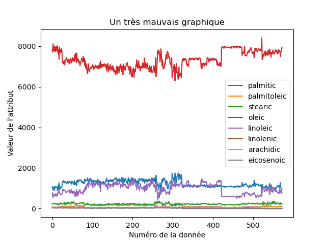Une manière d'obtenir une représentation qui a du sens, c'est-à-dire qui montre bien l'information que l'on veut montrer, consiste à utiliser une boîte à moustaches.
olives.plot.box (title = "Répartition des valeurs des attributs\n du jeu de données olives", xlabel = "Attribut", ylabel = "Répartition des valeurs de l'attribut") plt.show()
qui donne :
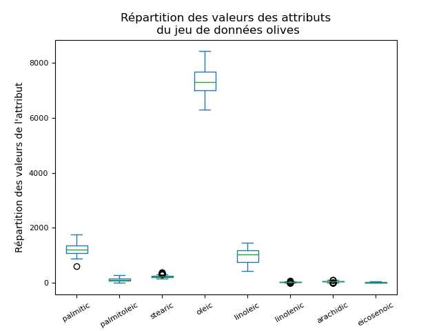On retrouve le même problème que précédemment, oleic ayant des valeurs bien supérieures aux autres attributs, et palmitic et linoleic étant eux-aussi bien plus grands que tous les autres attributs. Le plus simple est de faire trois graphiques.
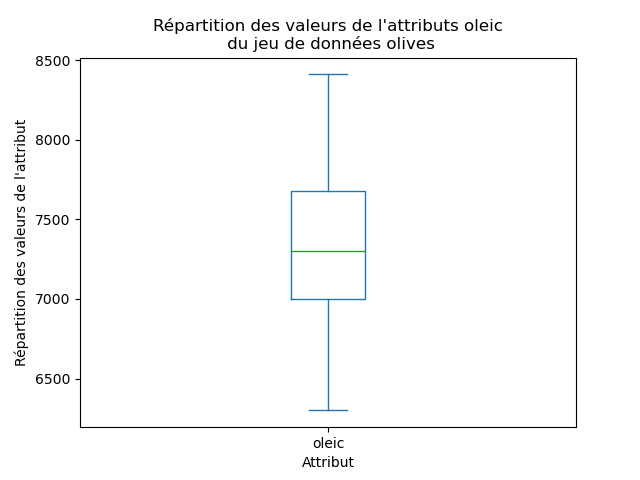 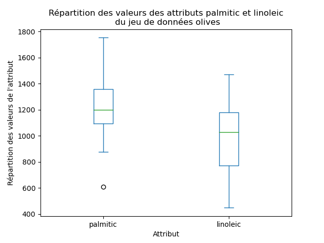 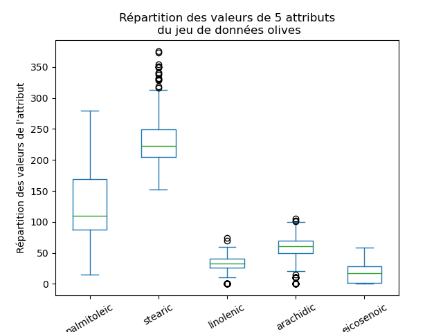
Un histogramme fournit beaucoup d'information sur la répartition des valeurs d'un attribut. Dans certains cas, on peut juger d'un coup d'œil que les valeurs ne sont pas distribuées uniformément ou normalement, ce qui est une information importante.
On utilise pour cela la méthode plot.hist (bins = ..., ...). Le paramètre bns indique la finesse de l'histogramme. Les autres paramètres sont à peu près les mêmes que pour plot.box. Regardez la documentation et réalisez les graphiques ci-dessous. Utilisez une boucle pour générer tous ces 8 graphiques d'un coup.
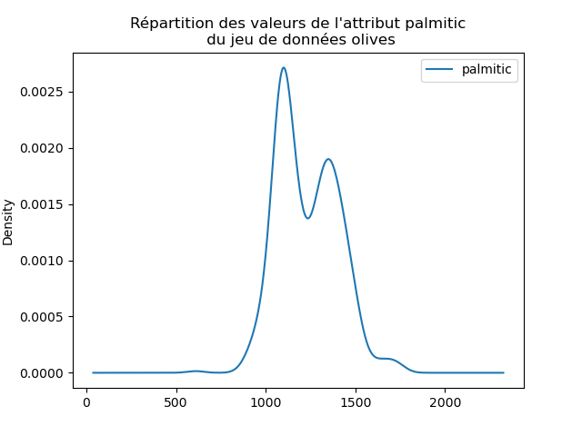 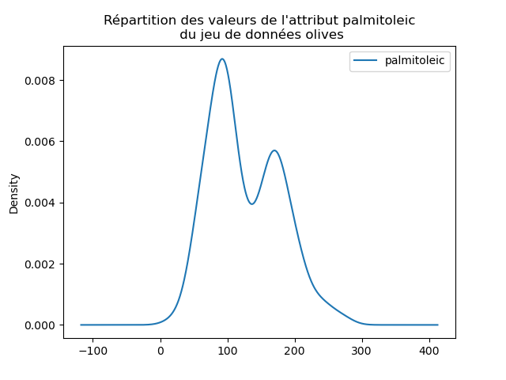 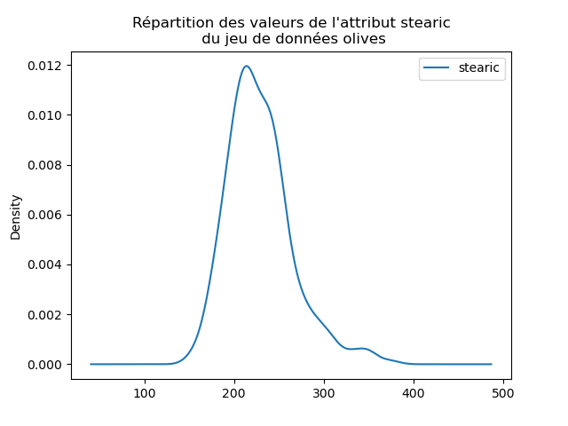 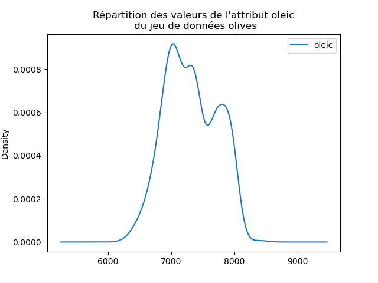 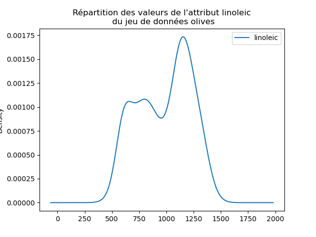 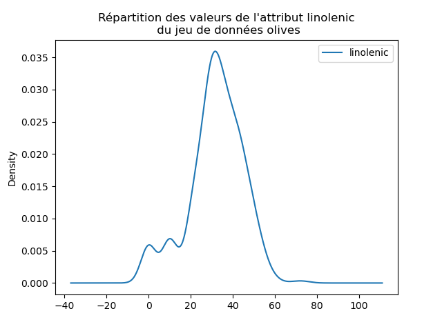 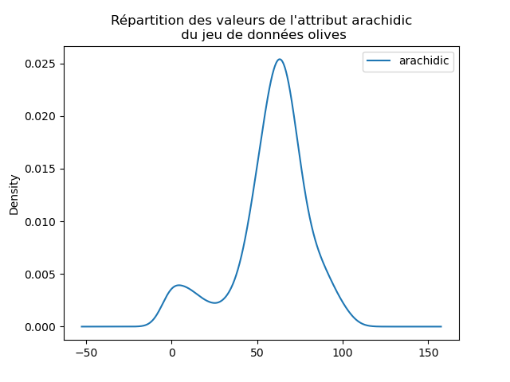 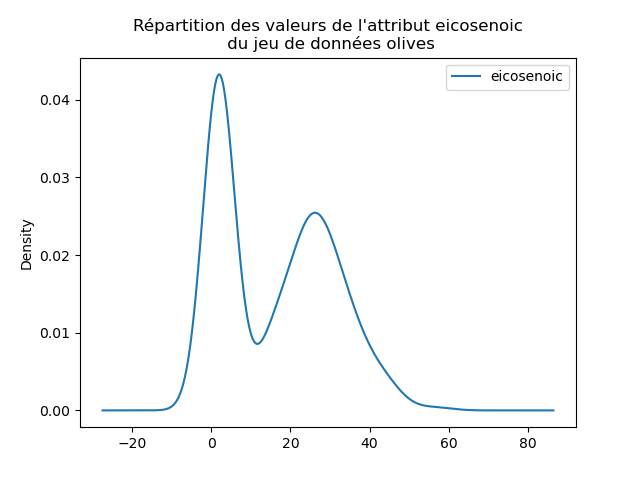
Ces deux visualisations produisent des résultats qui se ressemblent : on retrouve les mêmes pics et creux. Néanmoins, elles sont à utiliser avec prudence : ni l'une ni l'autre ne représente une information parfaite. Si on peut se dire que les 4 premiers couples (histogramme, densité) se ressemble, c'est beaucoup moins évidents pour les 4 suivants. Les histogrammes montrent des pics qui n'apparaissent pas dans les densités estimées. Ces pics isolés dans les histogrammes sont lissés dans les densités et disparaissent : existent-ils ? Quelle méthode donne la visualisation la plus fidèle des données ?
L'allure de l'histogramme dépend fortement de la discrétisation utilisée (le paramètres bins), notamment si le nombre de données est faible par rapport à la discrétisation.
Par ailleurs, il existe plusieurs manières de réaliser un histogramme, chacune donnant une certaine représentation de la distribution des valeurs d'un attribut.
De même, la forme de la densité estimée vaie selon les paramètres utilisés. Ici, on a utilisé les paramètres par défaut.
Une part très importante de la science des données consiste à trouver des relations entre des attibuts. Pour cela, on peut s'aider de visualisations graphiques.